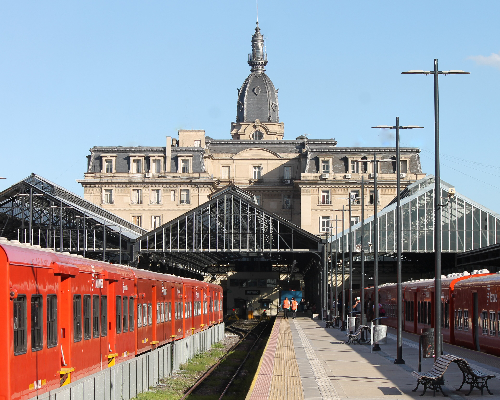
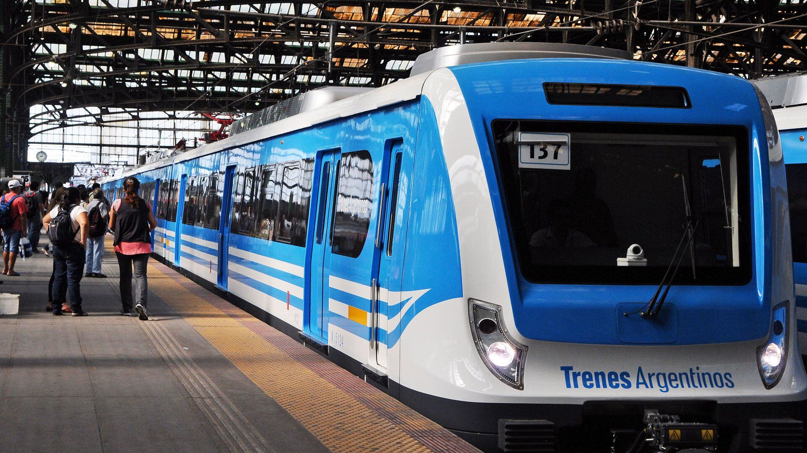
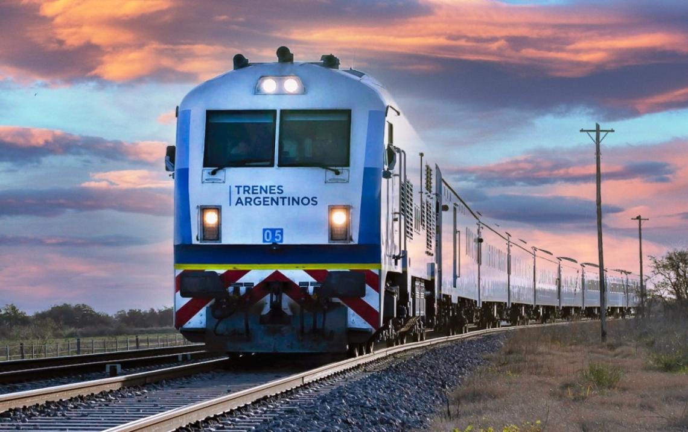
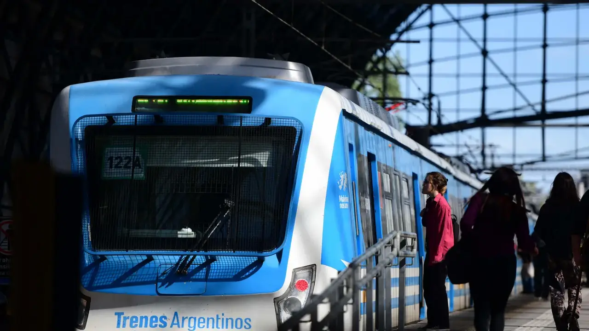
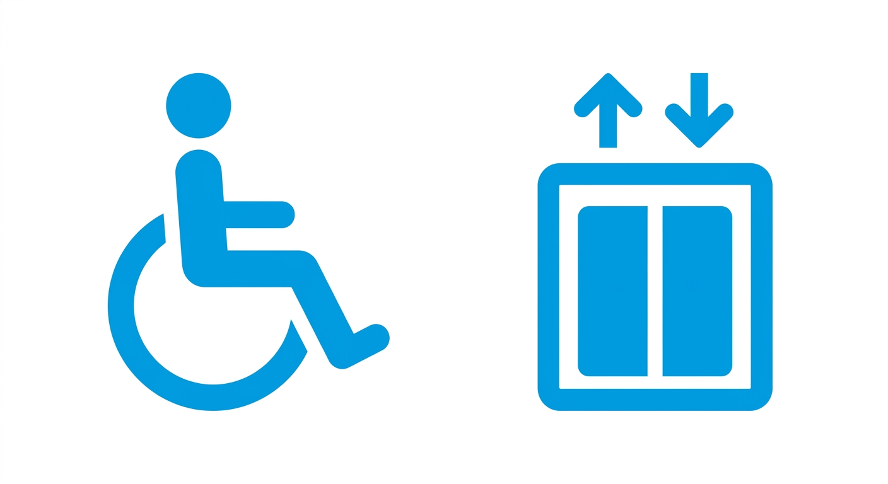

Línea Mitre
El sitio oficial de la Línea Mitre. Consultá horarios, ramales, accesibilidad y toda la información para tu viaje.

Estado del servicio

Ramal Tigre
● Servicio a horario
Ramal José León Suárez
● Servicio a horario
Ramal Zárate
● Servicio a horarioAccesibilidad y Conexiones
Movilidad Reducida (PMR)
Todas nuestras estaciones cuentan con rampas, ascensores y personal capacitado para asistencia.
Conexiones Automotor
Acceso directo a la Terminal de Ómnibus y múltiples líneas de colectivos (ej. Línea 152).
Movilidad sustentable
Todas las formaciones cuentan con furgones adaptados para el traslado seguro de bicicletas y monopatines.

Contacto y Atención al Pasajero
Dirección Institucional
Av. Dr. José María Ramos Mejía 1430, Retiro, CABA
Información clave
Tel: 0800-MITRE-INFO
📞 Teléfonos útiles
| 100 | Bomberos |
| 101 | Policía |
| 103 | Emergencias |
| 107 | SAME |
| 108 | Atención Social |
| 147 | Atención Ciudadana |